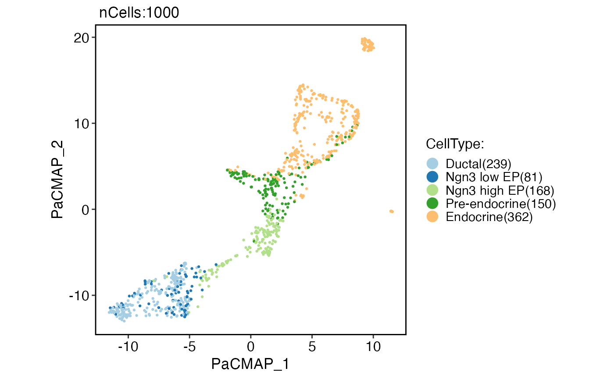

Run PaCMAP (Pairwise Controlled Manifold Approximation)
Usage
RunPaCMAP(object, ...)
# S3 method for class 'Seurat'
RunPaCMAP(
object,
reduction = "pca",
dims = NULL,
features = NULL,
assay = NULL,
layer = "data",
n_components = 2,
n.neighbors = NULL,
MN_ratio = 0.5,
FP_ratio = 2,
distance_method = "euclidean",
lr = 1,
num_iters = 450L,
apply_pca = TRUE,
init = "random",
reduction.name = "pacmap",
reduction.key = "PaCMAP_",
verbose = TRUE,
seed.use = 11L,
...
)
# Default S3 method
RunPaCMAP(
object,
assay = NULL,
n_components = 2,
n.neighbors = NULL,
MN_ratio = 0.5,
FP_ratio = 2,
distance_method = "euclidean",
lr = 1,
num_iters = 450L,
apply_pca = TRUE,
init = "random",
reduction.key = "PaCMAP_",
verbose = TRUE,
seed.use = 11L,
...
)Arguments
- object
An object. This can be a Seurat object or a matrix-like object.
- ...
Additional arguments to be passed to pacmap.PaCMAP.
- reduction
The reduction to be used. Default is
"pca".- dims
The dimensions to be used. Default is
NULL.- features
The features to be used. Default is
NULL.- assay
The assay to be used. Default is
NULL.- layer
The layer to be used. Default is
"data".- n_components
The number of PaCMAP components. Default is
2.- n.neighbors
A number of neighbors considered in the k-Nearest Neighbor graph. Default to 10 for dataset whose sample size is smaller than 10000. For large dataset whose sample size (n) is larger than 10000, the default value is: 10 + 15 * (log10(n) - 4).
- MN_ratio
The ratio of the ratio of the number of mid-near pairs to the number of neighbors. Default is
0.5.- FP_ratio
The ratio of the ratio of the number of further pairs to the number of neighbors. Default is
2.- distance_method
The distance metric to be used. Default is
"euclidean".- lr
The learning rate of the AdaGrad optimizer. Default is
1.- num_iters
The number of iterations for PaCMAP optimization. Default is
450.- apply_pca
Whether pacmap should apply PCA to the data before constructing the k-Nearest Neighbor graph. Using PCA to preprocess the data can largely accelerate the DR process without losing too much accuracy. Notice that this option does not affect the initialization of the optimization process. Default is
TRUE.- init
The initialization of the lower dimensional embedding. One of
"pca"or"random". Default is"random".- reduction.name
The name of the reduction to be stored in the Seurat object. Default is
"pacmap".- reduction.key
The prefix for the column names of the PaCMAP embeddings. Default is
"PaCMAP_".- verbose
Whether to print the message. Default is
TRUE.- seed.use
The random seed to be used. Default is
11.
Examples
pancreas_sub <- Seurat::FindVariableFeatures(pancreas_sub)
#> Finding variable features for layer counts
pancreas_sub <- RunPaCMAP(
object = pancreas_sub,
features = SeuratObject::VariableFeatures(pancreas_sub)
)
#> Error in h(simpleError(msg, call)): error in evaluating the argument 'x' in selecting a method for function 't': subscript out of bounds
CellDimPlot(
pancreas_sub,
group.by = "CellType",
reduction = "pacmap"
)
